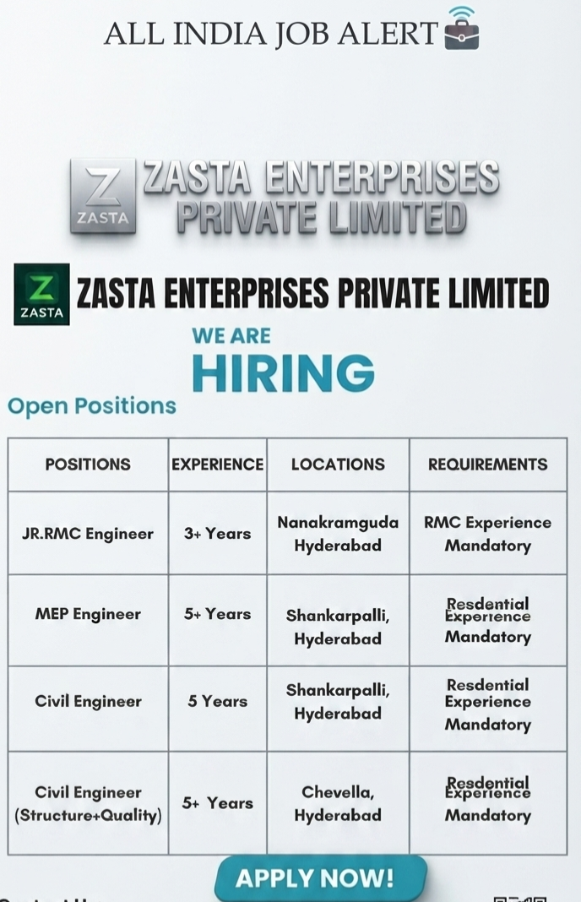

Company: Zasta Enterprises Private Limited
Industry: Construction & Real Estate
Job Type: Full Time
Experience: 3+ to 5+ Years depending on position
Location: Hyderabad, Telangana
Application Mode: Email / Online Application
Zasta Enterprises Private Limited has announced current job openings for experienced engineering professionals in Hyderabad. The recruitment drive includes opportunities for Junior RMC Engineers, MEP Engineers, Civil Engineers and Civil Engineers specializing in Structure and Quality. These positions are suitable for candidates who have practical experience in residential construction projects and are looking for career opportunities in Hyderabad.
The company is looking for experienced professionals who can contribute to construction planning, execution, quality control, site coordination and project delivery. Candidates with relevant educational qualifications and practical construction experience can apply for the appropriate position according to their experience and technical background.
The available recruitment information indicates that experience in residential projects is important for several positions. For the Junior RMC Engineer role, Ready Mix Concrete experience is specifically required. Candidates should carefully review the position details and ensure that their resume clearly explains their previous project experience.
| Position | Experience | Location | Requirement |
|---|---|---|---|
| Junior RMC Engineer | 3+ Years | Nanakramguda, Hyderabad | RMC Experience Mandatory |
| MEP Engineer | 5+ Years | Shankarpalli, Hyderabad | Residential Experience Mandatory |
| Civil Engineer | 5 Years | Shankarpalli, Hyderabad | Residential Experience Mandatory |
| Civil Engineer – Structure & Quality | 5+ Years | Chevella, Hyderabad | Residential Experience Mandatory |
The Junior RMC Engineer position is suitable for candidates who have practical experience in Ready Mix Concrete operations and construction projects. RMC experience is mandatory for this position. The selected candidate may be involved in concrete planning, batching plant coordination, quality monitoring, concrete testing and site coordination.
Candidates should have a good understanding of concrete technology, mix design, quality control procedures and construction requirements. Experience in high-rise residential projects can be particularly useful because RMC engineers need to coordinate concrete supply and quality with multiple construction teams.
The role may also involve maintaining records, checking concrete-related documentation, coordinating with site teams and ensuring that concrete activities are carried out according to project requirements and quality standards.
The MEP Engineer position is intended for experienced professionals who have worked on residential construction projects. MEP covers Mechanical, Electrical and Plumbing services, and professionals in this field are generally responsible for coordinating building services with civil and architectural activities.
The selected candidate may monitor MEP installation work, coordinate with contractors and subcontractors, review drawings, track site progress and resolve technical coordination issues. Good knowledge of building services and practical residential project experience can be important for this role.
Candidates should mention their previous residential projects, technical responsibilities and major MEP systems handled in their resume.
The Civil Engineer position at Shankarpalli, Hyderabad is suitable for professionals with approximately five years of construction experience. Residential construction experience is mentioned as a mandatory requirement for this position.
Civil Engineers may be responsible for supervising construction activities, checking drawings, coordinating contractors, monitoring quality and ensuring that work progresses according to the project schedule. The role can involve regular site visits and coordination with project management teams.
Applicants should have practical knowledge of civil construction activities and should be comfortable working at project sites. Experience in residential buildings, apartments or high-rise construction can be particularly relevant.
The Civil Engineer – Structure & Quality position is listed for Chevella, Hyderabad and requires more than five years of experience. Residential construction experience is mandatory according to the available recruitment information.
This position can involve structural construction monitoring as well as quality control responsibilities. The selected candidate may inspect construction activities, verify work according to drawings and specifications, coordinate with site teams and identify quality-related issues.
Candidates with strong knowledge of structural construction, quality procedures, inspection processes and residential building projects may be suitable for this position.
Engineering candidates should have an appropriate civil, mechanical, electrical or related engineering qualification according to the position. A B.E. or B.Tech qualification can be relevant for engineering roles. Candidates should confirm the exact qualification requirement with the recruitment team before applying.
For engineering positions, practical project experience is also important. Candidates should make sure their resume includes their educational qualification, total experience, current designation, previous companies and major construction projects handled.
Selected candidates will perform responsibilities according to their respective positions. Engineers may monitor daily site activities, coordinate with contractors, check construction quality and ensure that work is carried out according to approved drawings and specifications.
RMC professionals may focus on concrete quality, batching plant operations, mix design, testing and concrete supply coordination. MEP professionals may coordinate mechanical, electrical and plumbing services with civil and architectural teams.
Civil Engineers may supervise structural and civil construction activities, check measurements, monitor work progress and coordinate with project management teams. Structure and Quality professionals may additionally be responsible for inspections, quality documentation and compliance with project standards.
The available recruitment poster does not mention a fixed salary package for these positions. Candidates should confirm the expected salary, benefits and other employment conditions directly with the recruitment team.
Salary may depend on qualification, total experience, relevant project experience, technical skills and interview performance. Candidates should discuss salary, joining date, working hours, project location and other employment conditions before accepting an offer.
The listed positions are based at different project locations in Hyderabad. The Junior RMC Engineer position is listed for Nanakramguda, while the MEP Engineer and Civil Engineer positions are listed for Shankarpalli. The Civil Engineer – Structure & Quality position is listed for Chevella.
Candidates should confirm the exact project address, reporting location and working conditions with the recruitment team before attending an interview or joining the project.
Interested candidates should submit their updated resume mentioning the position they are applying for and their relevant construction experience.
Email:
hr@zastagroup.com
Example Email Subject:
Application for Junior RMC Engineer – Hyderabad
Contact Number: +91 8977731709
Website: www.zastagroup.com
The recruitment information is for Zasta Enterprises Private Limited.
The listed positions are Junior RMC Engineer, MEP Engineer, Civil Engineer and Civil Engineer – Structure & Quality.
The listed locations are Nanakramguda, Shankarpalli and Chevella in Hyderabad, Telangana.
Yes. RMC experience is specifically mentioned as mandatory for the Junior RMC Engineer position.
Residential project experience is mentioned as mandatory for the MEP Engineer and Civil Engineer positions.
Candidates can send their updated resume to the recruitment email address mentioned on this page.
Candidates should verify recruitment information before sharing personal documents or accepting an employment offer. Never pay money to anyone in exchange for a job, interview or selection. Always confirm the company, recruiter, interview location, salary, job responsibilities and employment conditions before proceeding.
The information on this page is prepared from the recruitment details available in the provided job advertisement. Vacancy status, experience requirements, location and recruitment conditions may change. Candidates should independently confirm the latest information with the concerned recruitment team.
Get the latest private jobs, construction jobs, engineering jobs, supervisor jobs, civil jobs, MEP jobs and other recruitment updates.
🏠 More Jobs